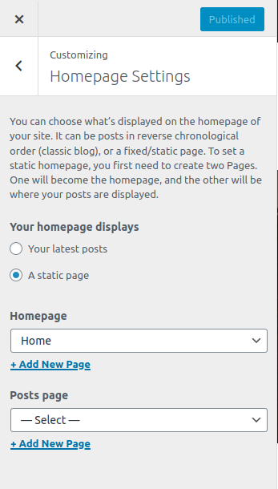

If you have not imported demo data or demo imported does not setup the homepage on it's own, follow the instructions below:
Setting up Home Page
- In your admin panel, go to Pages and click the Add New button.
- Give your page a title like Home
- On the right panel of the editor, click Document and open Page Attributes tab.
- Choose Homepage from the Template dropdown.
- Publish the page and your custom homepage is ready.

- Now go to Catmandu Pro and click Theme Customizer
- Then clikc on Homepage Settings section
- From there, select A static page on Your homepage displays
